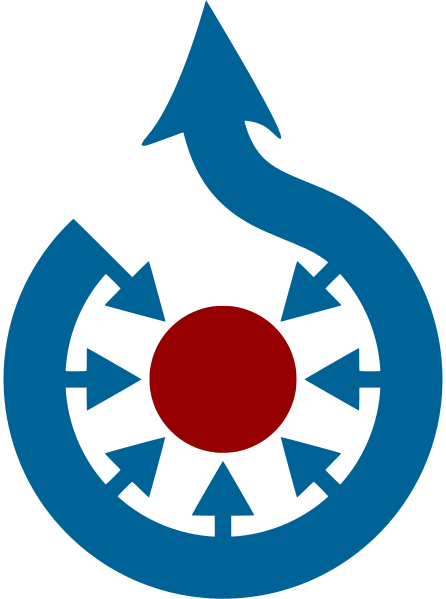

File:Commons-logo.svg
From Wikipedia, the free encyclopedia
{kind=link}

Size of this preview: 446 × 599 pixels. Other resolutions: 178 × 240 pixels | 357 × 480 pixels | 446 × 600 pixels | 571 × 768 pixels | 762 × 1,024 pixels.
{kind=link}
{kind=link}
{kind=link}
{kind=link}
{kind=link}
Original file (SVG file, nominally 1,024 × 1,376 pixels, file size: 10 KB)
| This is a local copy of an image on Commons, uploaded to ensure protection because it is one of the 100 most-used files on the English Wikipedia. See the description page on Commons for more information about this file. |
{kind=link}
| The uploader or another editor requests that a local copy of this file be kept. This image or media file is available on the Wikimedia Commons as File:Commons-logo.svg. While the license of this work may be compliant with the Wikimedia Commons, an editor has requested that the local copy be kept too. This file does not meet CSD F8, and should not be nominated for deletion as a Commons duplicate without the permission of the tagging editor. |
License[edit]
{kind=link}
- (Automatically detected from file categories on Commons at 03:59, 3 October 2011 (UTC))
 |
This image, or parts of it, is an official logo or design used by Wikimedia Foundation or by one of its projects. It is copyrighted by the Wikimedia Foundation.
Use of Wikimedia logos and trademarks is subject to the Wikimedia trademark policy and visual identity guidelines, and may require permission. © & ™ Wikimedia® and Wikipedia® are registered trademarks of Wikimedia Foundation, Inc. All rights reserved. |
File history
Click on a date/time to view the file as it appeared at that time.
| Date/Time | Thumbnail | Dimensions | User | Comment | |
|---|---|---|---|---|---|
| current | 03:59, 3 October 2011 | 1,024 × 1,376 (10 KB) | Anomie (talk | contribs) | {{Keep local high-risk|reason=it is one of the 100 most-used files on the English Wikipedia}} ==License== :''(Automatically detected from file categories on Commons at ~~~~~)'' {{Non-free Wikimedia logo}} |
- You cannot overwrite this file.
File usage
More than 100 pages link to this file. The following list shows the first 100 page links to this file only. A full list is available.
- A
- ABBA
- A Clockwork Orange
- A Modest Proposal
- Aardvark
- Aardwolf
- Abacus
- Aberdeenshire
- Abortion
- Abraham Lincoln
- Academy Awards
- Achilles
- Actinium
- Actinopterygii
- Adobe
- Aegean Sea
- Affidavit
- Afghanistan
- Agriculture
- Aikido
- Aircraft
- Akira Kurosawa
- Alabama
- Alaska
- Albania
- Albert Einstein
- Albert Sidney Johnston
- Alberta
- Alchemy
- Aldous Huxley
- Alexander Graham Bell
- Alexander the Great
- Alfred Hitchcock
- Alfred Nobel
- Algae
- Algeria
- Alismatales
- Alkane
- Allah
- Allan Dwan
- Alphabet
- Aluminium
- Amateur astronomy
- America the Beautiful
- American Civil War
- American Revolutionary War
- Americium
- Amphibian
- Amsterdam
- Anaconda
- Analysis of variance
- Anarchism
- Anatolia
- Anatomy
- Ancient Egypt
- Andre Agassi
- Andrei Tarkovsky
- Andrey Markov
- Android (robot)
- Andy Warhol
- Angola
- Animation
- Anime
- Ankara
- Anna Kournikova
- Annual plant
- Antimony
- Apollo
- Apollo 11
- Apollo 8
- Apple Inc.
- Aquarius (constellation)
- Arabic language
- Arable land
- Archipelago
- Argon
- Aries (constellation)
- Aristotle
- Arsenic
- Art
- Arthur Schopenhauer
- Articles of Confederation
- Aruba
- Asia
- Asparagales
- Asphalt
- Assistive technology
- Astatine
- Asterales
- Asteroid
- Asteroids (video game)
- Astronaut
- Atlantic Ocean
- Atom
- Attila
- Audi
- Austroasiatic languages
- Autism
- Ayn Rand
- Azerbaijan
{kind=link}
{kind=link}
{kind=link}
{kind=link}
{kind=link}
{kind=link}
{kind=link}
{kind=link}